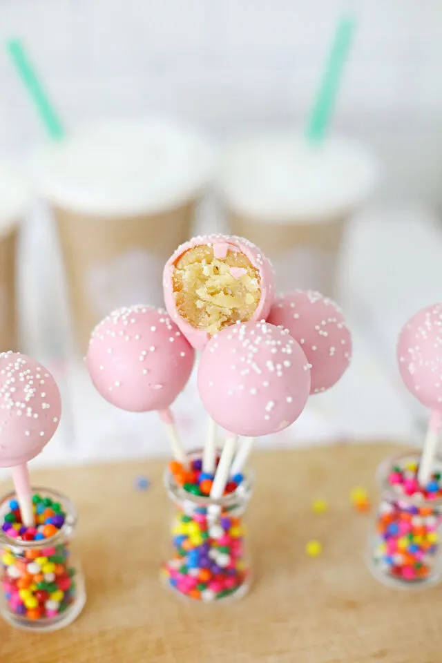
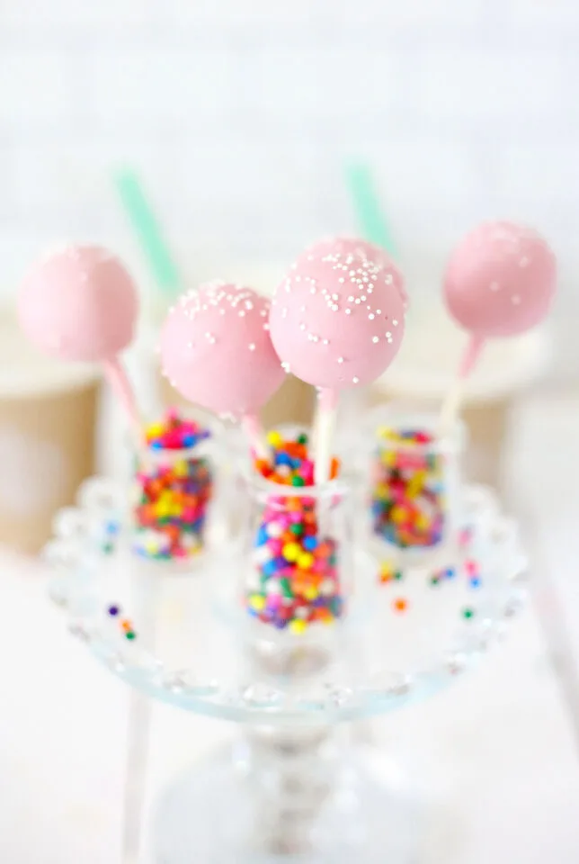

Birthday Cake Pops


These are delicious! The two prerequisites for this recipe are a simple vanilla cake and a vanilla frosting
One set of vanilla cake ingredients will yield 12-13 cake pops and you will need 2-3 white chocolates to melt.
Prerequisite 1: Vanilla Frosting (prepare this first)
Important note: 1/3 of the frosting batch prepared here will last for one batch of vanilla cake and yield 12-13 cake pops. Thus, the entire batch of frosting requires three vanilla cakes and yields 36-39 cake pops. You can always freeze the remaining frosting!
Ingredients:
- 227 gr butter, room temperature
- 1/4 teaspoon salt
- 360 gr powdered sugar
- 3 tablespoons heavy cream
- 1 teaspoon vanilla extract
Steps:
- Beat butter with an electric mixer until creamy. Sprinkle salt over butter and stir again to combine.
- Gradually, about ½ cup at a time, add powdered sugar, waiting until each cup is completely mixed before adding more.
- With mixer on medium-low speed, add the heavy cream, one tablespoon at a time. Once ingredients are well incorporated, gradually increase speed to high and beat for about 30 seconds.
- Add vanilla extract and stir well.
- Set aside required amount for cake pops and freeze the rest
Prerequisite 2: Simple Vanilla Cake
Ingredients:
- 156 gr all-purpose flour
- 100 gr sugar (because original 200 gr are too much)
- 76 gr butter, room temperature
- 177 ml milk
- 1 1/2 teaspoons baking powder
- 1 teaspoon vanilla extract
- 1/2 teaspoon salt
- 1 large egg, room temperature
Steps:
- Preheat oven to 180 Celsius, "Ober-/Unterhitze" for German ovens.
- Add baking sheet to your 8"/9" cake pan - I used a small lasagna pan
- In a large bowl, mix wet ingredients starting with butter. Add dry ingredients and mix with an electric mixer on low-speed for 30 seconds.
- Turn mixer to high and beat an additional three minutes, scraping now and then.
- Pour batter into prepared pan(s) and bake about 30 minutes.
- Let cool for at least 20 minutes.
Birthday Cake Pops (Finally!!!)
Ingredients:
- vanilla cake for 12-13 cake pops
- 4 tablespoons vanilla frosting for 12-13 cake pops
- 200 gr chocolate "kuverture" white
- food coloring, e.g. purple
- 1 teaspoon vegetable oil
- sprinkles
- candy sticks
Steps:
- Bake vanilla cake and when cake cools, place it in a large mixing bowl and use fork to break up the vanilla cake into small crumbs.
- Keep going until fine crumbs form!
- Add frosting and mix it in using hands until you have a well mixed gooey mound of cake mixture.
- Place a large piece of parchment paper on a cookie sheet, and place it close to the bowl on the counter.
- Roll the cake mixture into cake balls using the palm of your hand about 1 1/2 inches in size and place on the parchment paper that is placed onto a baking sheet. Continue until you've used all the cake mixture. You can also use a cookie scoop to ensure they are all the same size.
- Melt the chocolate and using the lollipop sticks, dip the sticks into the melted chocolate, and immediately into one of the cake balls then place onto the cookie sheet. Repeat until all the cake balls have a stick.
- Place the cookie sheet/cake pan(!) in the freezer for 30 minutes to make sure the sticks adhere to the cake pops.
- After 30 minutes, remove the cake pops from the freezer, and remelt all of the chocolate. Add food coloring until you have your desired color.
- Add 1/2 teaspoon of vegetable oil, stir to blend - makes chocolate more workable, but you may not require this step.
- Holding the sticks, dip the entire cake pop into the melted chocolate, add sprinkles on top of the cake pops and set down in small cake pan (will leave one side flat not round). Repeat until all cake pops have been dipped and sprinkled.
- Allow the cake pops to sit for 1 hour, while the chocolate sets or hardens.
- Place in an airtight container and keep refrigerated for best results.
Return to main page